深圳垃圾分类模式¶
早在2016年，广东就成为全国第一个对生活垃圾分类立法的省份，深圳成为率先实施生活垃圾分类的重点城市之一。作为中国大陆第一个完全城镇化的城市，我们一起来看看深圳是如何实施垃圾分类的，有哪些经验值得我们参考学习。
深圳生活垃圾九大分流体系¶
深圳的垃圾分类不需要鉴别 “干垃圾” 和 “湿垃圾”，而是按照九大类生活垃圾分流分类。
根据2019年数据，九大类及其收运处理情况如下：
绿化垃圾 —— 收运处理公园和道路养护产生的绿化垃圾约 613吨/日
果蔬垃圾 —— 覆盖全市 400 余个农贸市场和大型商超，收运处理量约 311吨/日
有害垃圾 —— 有害垃圾回收以电池、灯管为主，收运处理量为 电池0.2吨/日 灯管0.3吨/日
餐厨垃圾 —— 实行收运处理特许经营，已建成罗湖、南山、龙岗、龙华4座处理设施，收运处理量约 1180吨/日
玻金塑纸 —— 全市住宅区设置分类收集容器约 7000 组，收运处理量约 85吨/日
厨余垃圾 —— 全市约 1000 个住宅区实施厨余垃圾分类，收运处理量 65吨/日
废旧织物 —— 全市住宅区共设置回收箱 4500 余个，箱体统一喷涂备案编号、投诉热线等监督信息，收运处理量约 13吨/日
废旧家具 —— 建立废旧家具预约回收制度，实行定点投放、预约清运，收运处理量约 816吨/日
年花年桔 —— 2019年全市累计收运处理年花年桔 165 万盆，再利用花盆 104 万个，回植复种年桔 9.5 万株，减少焚烧和填埋量约 11000吨 （针对广东居民春节购买年花年桔的传统习俗，对这种 “时令垃圾” 进行收运处理，包括回收花盆、回植复种年桔。）
“九大分流体系” 是 “深圳模式” 的基础，也是 “深圳模式” 最核心的内容。
深圳根据收运和处理的配套情况，提出 “大分流细分类” 的理念。“大分流”主要从行业管理角度，分别是绿化垃圾、果蔬垃圾、餐厨垃圾。“细分类” 主要从市民参与角度，分别是有害垃圾、玻金塑纸、厨余垃圾、废旧织物、废旧家具、年花年桔。
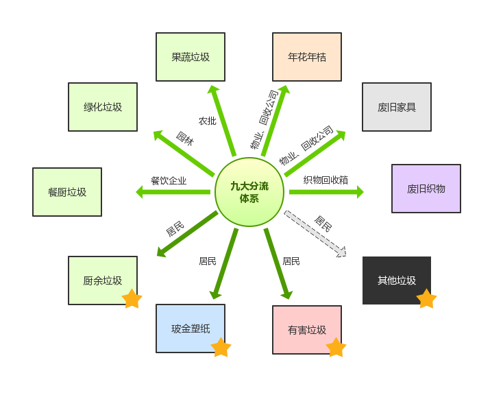目前，对于居民来说，日常生活垃圾投放主要按 “玻金塑纸”、“厨余垃圾”、“有害垃圾” 和 “其他垃圾” 进行分类，对应住建部规定的可回收物、易腐垃圾、有害垃圾、其他垃圾四大类。
另外，废旧织物则投放到专门的废旧织物回收箱；家具等大件垃圾、年花年桔则可由物业联系专门的回收公司收取；绿化垃圾、果蔬垃圾、餐厨垃圾主要涉及园林、农批、餐饮等企业。
南山区垃圾分类环境生态园
位于塘朗山西北侧的南山区垃圾分类环境生态园，步入园区，草木葱茏，不看指示牌还以为是一处办公场所。与我们印象中乱糟糟的垃圾处理基地相比，这里虽然有明显异味，但却显得干净整洁，井然有序。
对应深圳垃圾分类的九大分流体系，南山区有六大类垃圾的分拣处理基地都设在这里。分别是玻金塑纸分拣基地、废电池废灯管暂存基地、果蔬垃圾处理基地、厨余垃圾处理基地、废旧家具处理基地以及年花年桔回植基地。
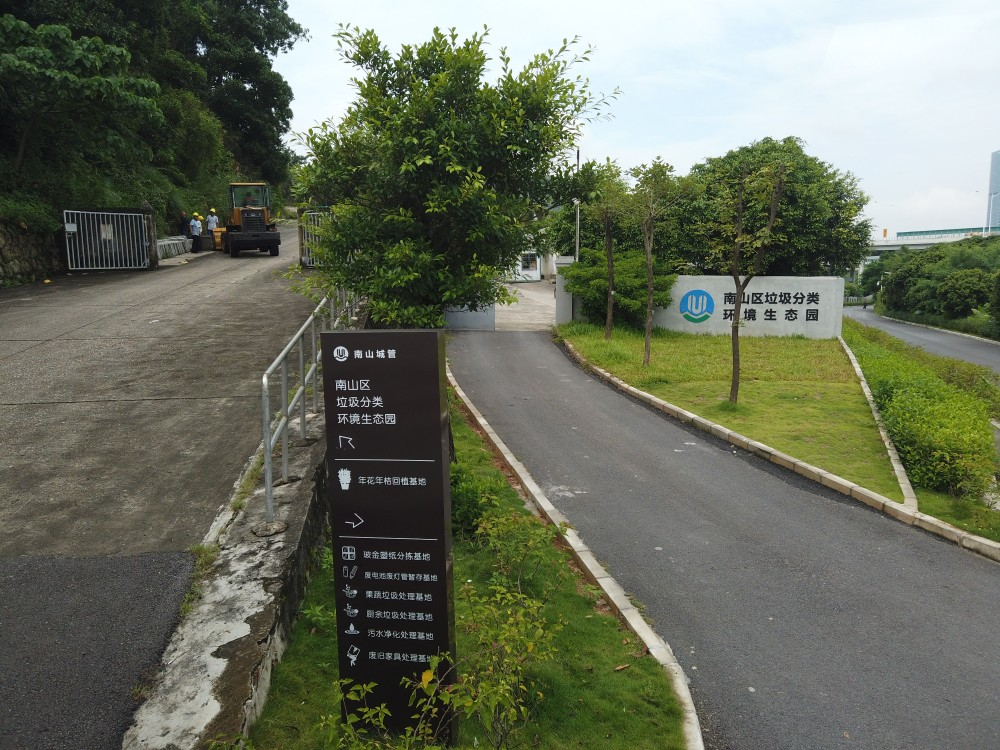{kind=link}
南山区垃圾分类环境生态园
{kind=link}
深圳市南山区 · 坪山垃圾填埋场
下面我们分别来看看九大类的具体情况吧，Let’s go！
1. 年花年桔¶
地点：南山区年花年桔回植基地
南山区坪山垃圾填埋场1995年投入使用，2003年封场，占地200多亩。经过16年的无害化生态修复，目前堆填物及地表地貌已基本稳定。2019年，南山区将垃圾填埋场修复地作为年花年桔回植基地，今年计划回植年花年桔5000棵。
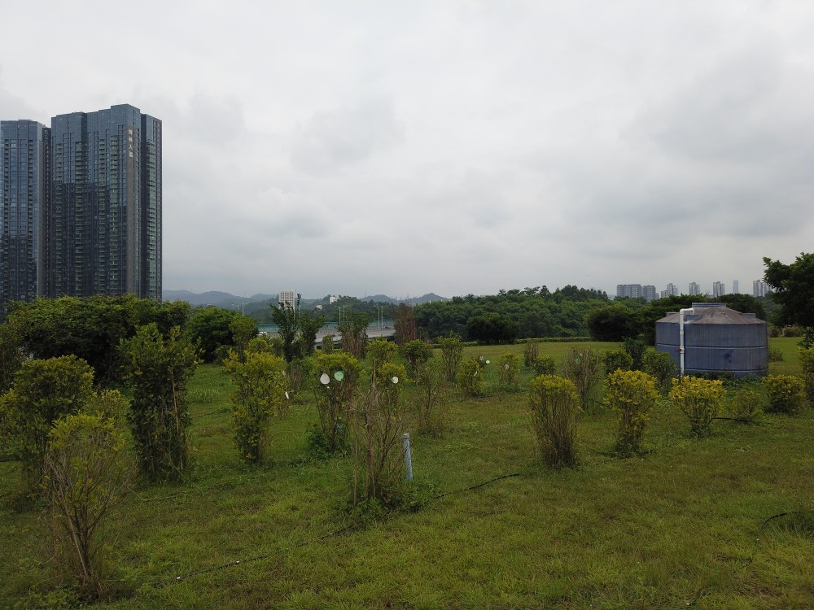{kind=link}
深圳已连续4年在全市统一开展年花年桔专项回收活动，居民只需要将年花年桔放在指定投放点，再由物业公司通过微信或电话预约免费回收即可。而在已封场的垃圾填埋场上进行年花年桔的回植，既能降低填埋场对周边的环境影响，也能对年花年桔的回收进行处理。
2019年全市累计收运处理年花年桔 165 万盆，再利用花盆 104 万个，回植复种年桔 9.5 万株，减少焚烧和填埋量约 11000吨。
2. 果蔬垃圾¶
地点：南山区果蔬厨余垃圾处理基地
果蔬垃圾的处理，主要依靠一套日处理能力40吨的果蔬垃圾处理设备。目前已正式开始收运、处理全区94家农贸（农批）市场、中大型超市产生的果蔬垃圾。为提高果蔬垃圾末端收运处理量，南山区城市管理和综合执法局要求各街道办协助收运企业与各市场、商超签订果蔬垃圾收运协议，从而落实双方的主体责任，规范收运管理工作，提升了收运处理量。
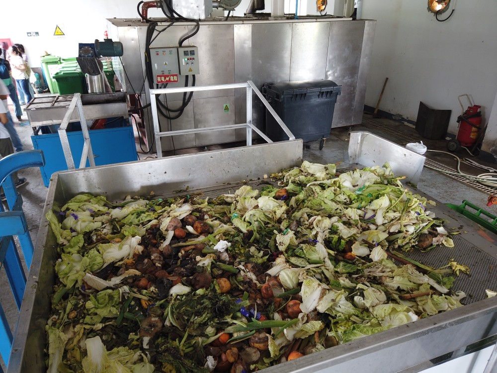{kind=link}
果蔬垃圾经破碎、压榨等环节处理后，进行脱水减量，效果明显。此后得到的固体渣滓，可进行二次利用，比如做成有机肥基质和生物质燃料，从而实现果蔬垃圾的资源化，节约资源和能源。
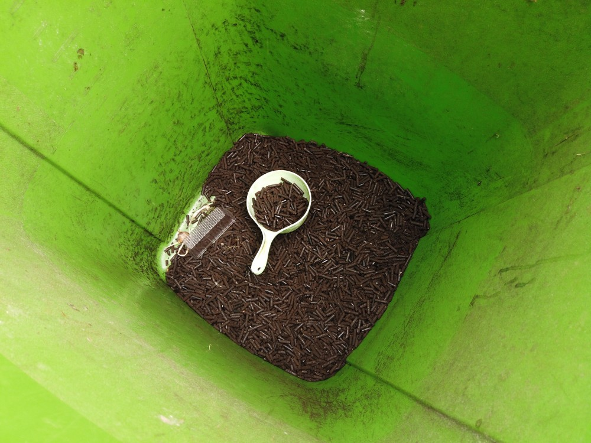{kind=link}
除南山区外其他各区也逐步落实果蔬垃圾收运处理，目前已覆盖全市 400 余个农贸市场和大型商超，收运处理量约 311吨/日。
3. 玻金塑纸¶
地点：南山区垃圾分类环境生态园 · 玻金塑纸分拣基地
{kind=link}
在 “玻金塑纸” 分拣基地，按照不同类别，分别划出了单独区域进行分拣、整理。
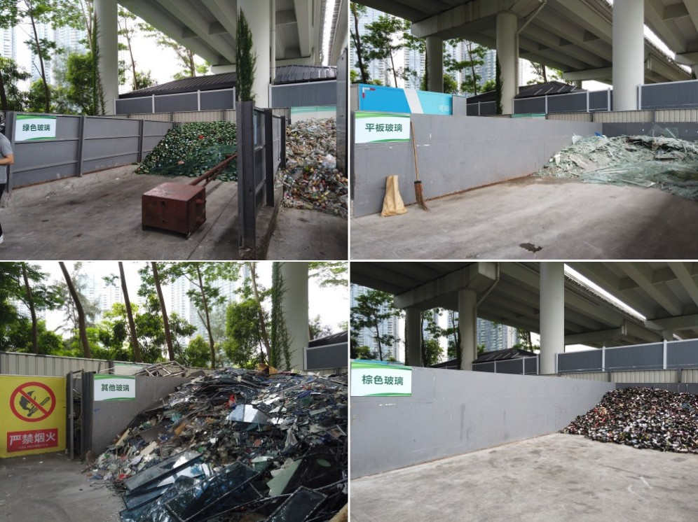{kind=link}
以玻璃分拣处理为例，每天收到的玻璃近6吨，分颜色进行分类，然后破碎、清洗后再送到佛山等玻璃厂回收利用。目前，南山区玻璃回收总量约占全市玻璃回收总量的22%，全市排名第一。
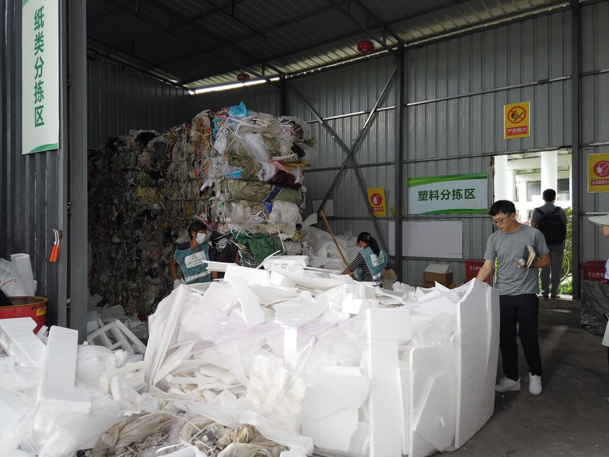{kind=link}
虽然一些破碎的塑料回收价值低，但也会进行集中回收，再送到东莞等企业进行回收再生产为塑料袋等。
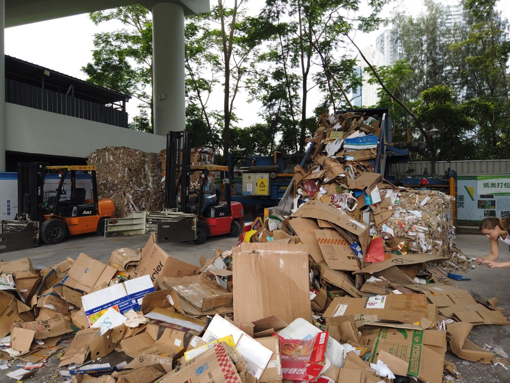{kind=link}
为了提高回收处理量，南山区城市管理和综合执法局对 “玻金塑纸” 回收处理现场进行升级，在园区基地内增设纸类及塑料的压缩、打包及处理设备，扩大收运范围，现已投入使用。升级后，每天从南山区 800 多个垃圾分类投放点收集来的玻金塑纸达 17 吨。全市设置的分类收集容器约 7000 组，收运处理量达 85 吨/日。
4. 有害垃圾¶
地点：南山区垃圾分类环境生态园 · 废电池废灯管暂存基地
南山区垃圾分类环境生态园区内设置了废电池废灯管暂存基地，目前全区有害垃圾日收运处理量为75公斤，其中废旧灯管45公斤，废旧电池30公斤。
南山区在住宅小区及公共场所设置专用收集容器，委托具有回收处理资质的企业进行分类收运和无害化处理。住宅小区及公共场所产生的有害垃圾待收集暂存到一定量后，由物业预约中标企业上门收运，再交由无害化处理。
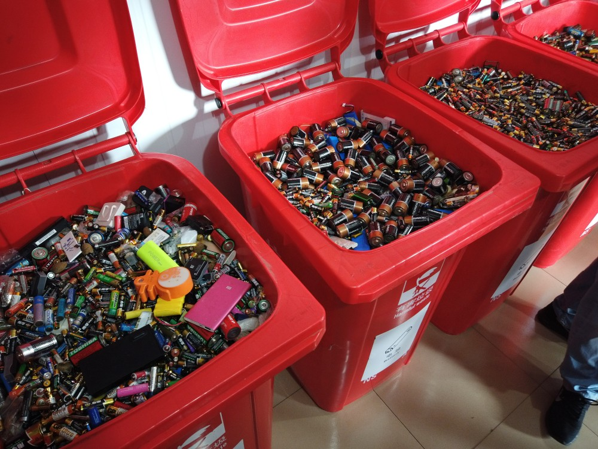{kind=link}
有不少城市把无汞的干电池归为 “其他垃圾”，但是深圳是仍然归为 “有害垃圾” 统一收集处理。
据了解，这时因为过去很长一段时间里都把干电池归为有害垃圾，即便现在正规生产的干电池不含汞，但考虑居民的接受程度及资源化利用，目前不管是干电池还是充电电池、纽扣电池，依然统一归为有害垃圾进行收集，后续再精细分拣交由专门企业无害化处理。
5. 废旧家具¶
地点：南山区垃圾分类环境生态园 · 废旧家具处理基地
在废旧家具处理基地，被运到这里的大件垃圾分门别类地摆放着，主要是床垫和沙发。工人们正忙着进行拆解，分离出其中的海绵、棕垫、木头、铁丝、布条等可回收利用物品，并将分离出的各类物品分门别类按照不同的质量级别整理，捆起来，堆放得整整齐齐。
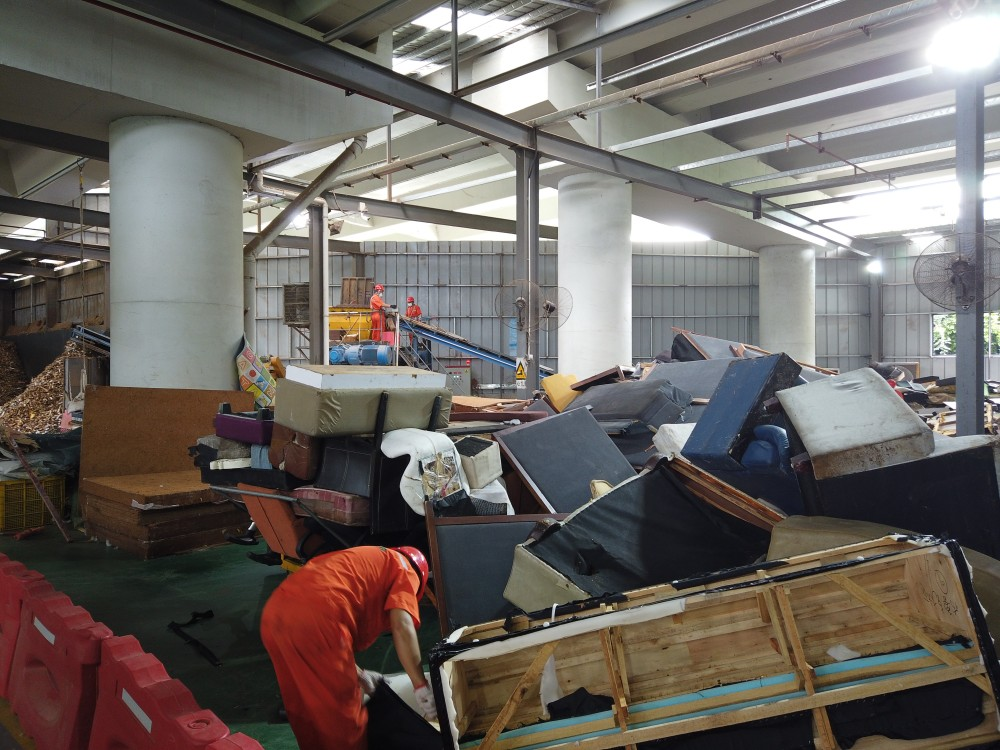{kind=link}
其中，拆除出来的海绵、弹簧可以继续回收利用，海绵可以回收用作鸡蛋托等再生利用，弹簧则熔炼再利用，木板则运到韶关等电厂用作燃料，资源回收利用率可达到70%。
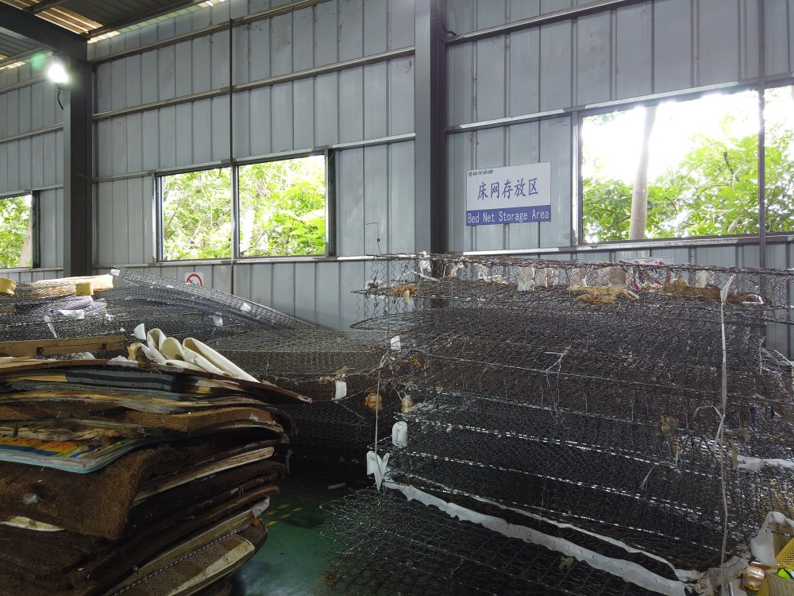{kind=link}
深圳市已初步建立废旧家具预约回收制度，实行定点投放、预约清运，居民可将废旧家具等大件垃圾放置在指定投放点，再由物业联系专门的回收公司收取。据统计，仅该废旧家具处理基地的日收运处量就有40吨左右，而全市收运处理量达 816吨/日。
6. 废旧织物¶
地点：深圳市环保产业园 · “衣旧情深” 旧衣物循环利用分拣中心
南山区城市管理和综合执法局联合专业回收企业，共同打造了一个可供市民参观学习的废旧织物宣传教育及处理一体化基地 —— 西丽 “衣旧情深” 旧衣物处理及科普教育一体化基地。
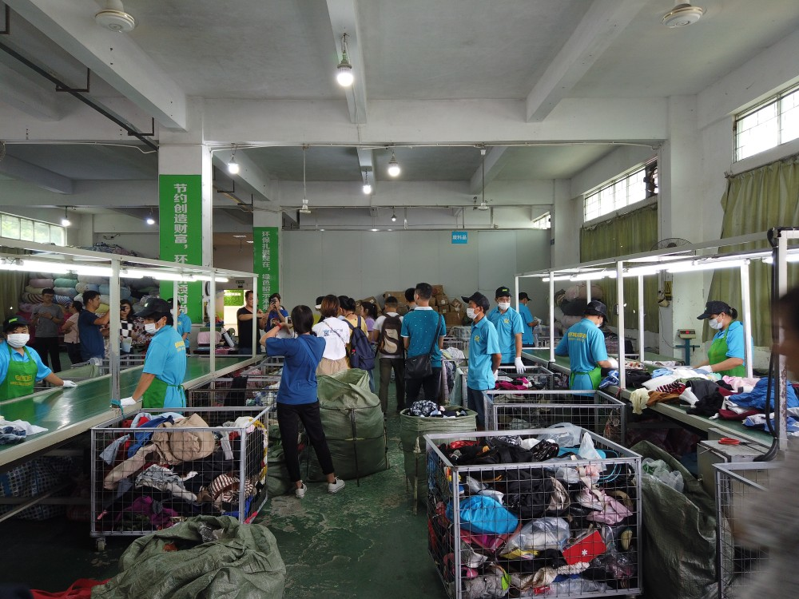{kind=link}
在这里，工作人员有条不紊地先将回收的旧衣物按照白色、杂色等颜色分类进行分拣。接着，清理出其中一部分较新的、符合民政部门要求的衣物，经过清洗、消毒，整理、打包好后整理归类，将用作公益捐赠送往各大慈善机构，扶贫济困，回馈社会。而淘汰下来的其他衣物、织物则用于再生循环利用。
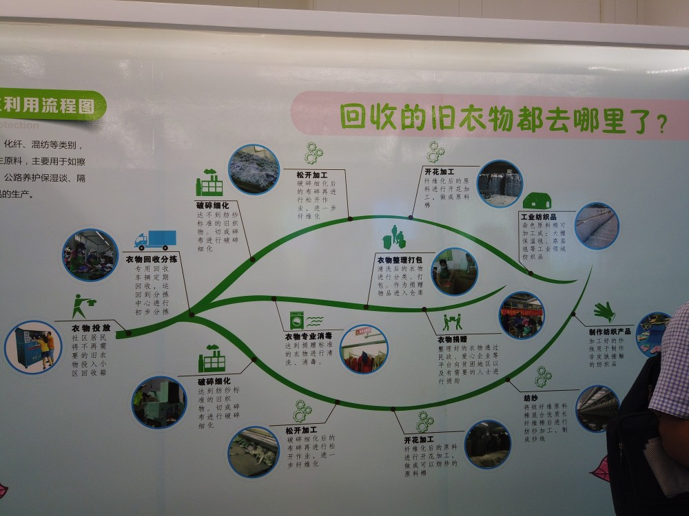{kind=link}
废旧织物收运处理是市场化运营，每家废旧织物收运公司都有自己公司的一套处理体系。2018年，南山区进一步清理了全区废旧织物回收处理单位，只保留四家较规范、信誉良好的单位，对全区废旧织物回收箱进行统一编号、统一标识、统一管理，进一步加强对废旧织物流向的监管，防止直接回流市场。全区四家收运公司日收运处理量为1.8吨，其中衣旧情深公司日收运处理量为0.8吨。
目前，全市住宅区共设置回收箱 4500 多个，箱体统一喷涂备案编号、投诉热线等监督信息，收运处理量达 13吨/日。
7. 绿化垃圾¶
地点：南山区绿化枝叶生态处理基地
{kind=link}
南山区绿化垃圾处理基地位于西丽果场内，占地面积3000平方米，设置了大型粉碎设备资源化处理，目前基地的绿化垃圾处理量约 100吨/日，可以消化南山区所有公共绿地、公园、小区产生的绿化垃圾。绿化垃圾破碎处理后，除小部分运往电厂焚烧发电，绝大多数用于西丽果场，为一两千亩果园提供肥料。
8. 餐厨垃圾¶
地点：南山区餐厨垃圾处理基地
南山区餐厨垃圾处理基地位于妈湾大道垃圾发电厂东侧，由特许经营企业腾浪公司运营，餐厨垃圾日收运处理量220吨，同时，每天还可处理80吨的废弃油脂。目前基本可以满足南山区餐厨垃圾运作的处理量。
腾浪在南山区的餐厨垃圾处理项目，虽然现在日处理量将近300吨。但其实在刚开始的时候，很难收到足够的量，而没有足够的量又很难让产线正常工作。所以在项目初期，腾浪的工作人员到各餐饮单位上门宣传，免费为他们收集和处理餐厨垃圾。然而，很多餐饮单位对此感到不解，甚至不愿意把餐厨垃圾交给腾浪，因为商家可以在 “潲水猪” 产业链中获利。
虽然困难重重，但不断地宣传教育，以及政府部门对餐饮单位的督导和管控。经过十几年的努力，终于把整个体系建立齐全。所以现在能达到这个处理量，得益于国家对垃圾分类的推广。另一方面，由于近期广东省住建部发布的关于 “加强非洲猪瘟防控” 工作，强调餐厨垃圾应收尽收、全量回收处理，也让更多人知道餐厨垃圾回收的重要意义。
那么，又臭又脏的餐厨垃圾回收后如何处理才能被转化为有用资源呢？
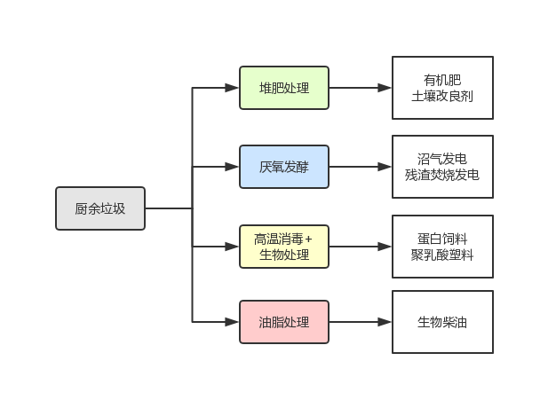{kind=link}
工作人员介绍，餐厨垃圾经过油水分离后，油脂部分可加工为生物柴油和工业级混合油。初步处理后的餐厨垃圾主要用于厌氧发酵产沼发电。而另一部分餐厨垃圾经过高温高压无害化处理后，可进一步加工为肥料、蛋白饲料等。
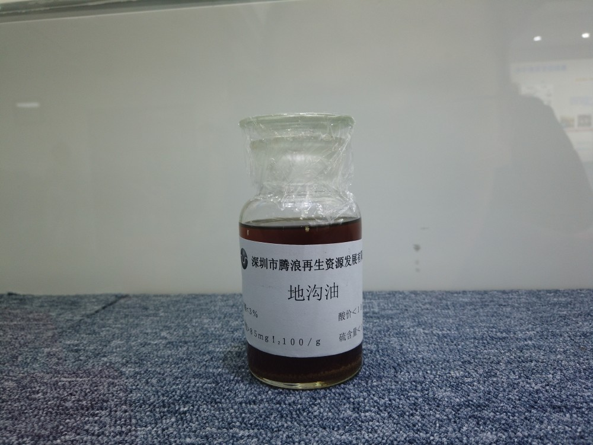{kind=link}
深圳市实行收运处理特许经营，已建成罗湖、南山、龙岗、龙华4座处理设施，收运处理量约 1180吨/日。
注解
餐厨垃圾和厨余垃圾的成分及处理方式其实没有太大区别，“九大分流体系” 把它们分离出来是因为收集方式不一样。餐厨垃圾主要从餐饮、食堂等地方收集，而厨余垃圾主要从居民家庭中收集。由于缺乏监督和配套设施，居民端的干湿分离还做得不到位，目前厨余垃圾的收运处理量约 65吨/日，远小于餐厨垃圾量。因此本文不对厨余垃圾的处理进行描述。
9. 其他垃圾¶
地点：深圳市能源环保有限公司 · 南山垃圾发电厂
深圳作为一座人口大都市，每天共产生 2.85 万吨生活垃圾。面对如此巨大的垃圾负担，虽然有九大分流体系，但仍然无法避免大量的 “其他垃圾”。据了解，目前这部分垃圾当中的 49% 用于焚烧发电，接下来比重还将增加到 65%。
南山垃圾焚烧发电厂位于南山区妈湾港北侧的南山能源生态园（一期），与周边高档住宅小区直线距离不到一公里，与国家4A级景区青青世界距离仅2公里。
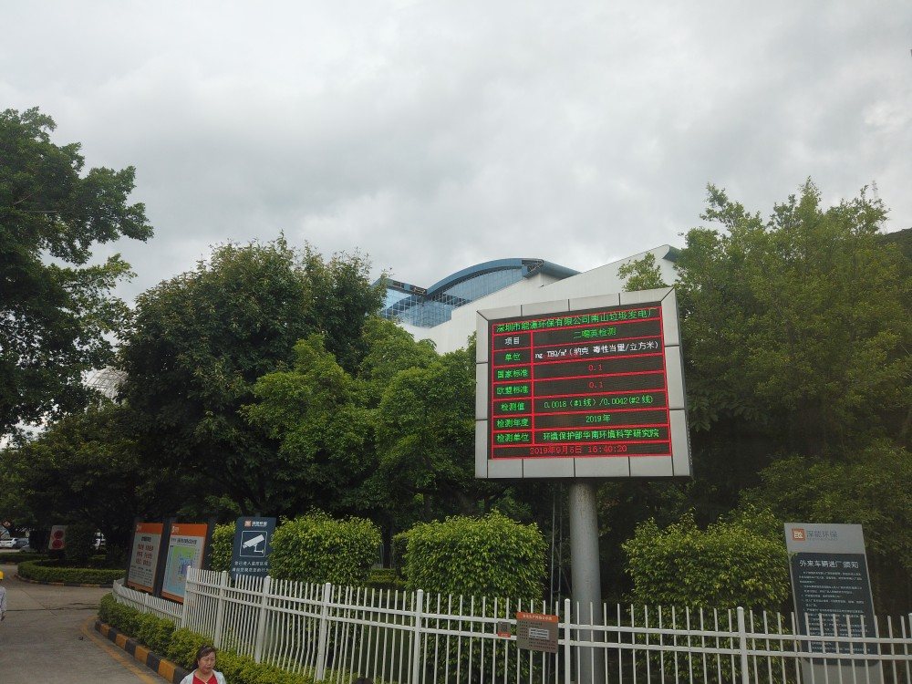{kind=link}
二期也已进入调试运行阶段，配备2台日处理量750吨、具有国际先进水平的比利时西格斯炉排炉，一台50MW汽轮发电机组。并采用国际先进的烟气净化设施，环保指标达到深圳标准，优于欧盟2010/75/EU标准。
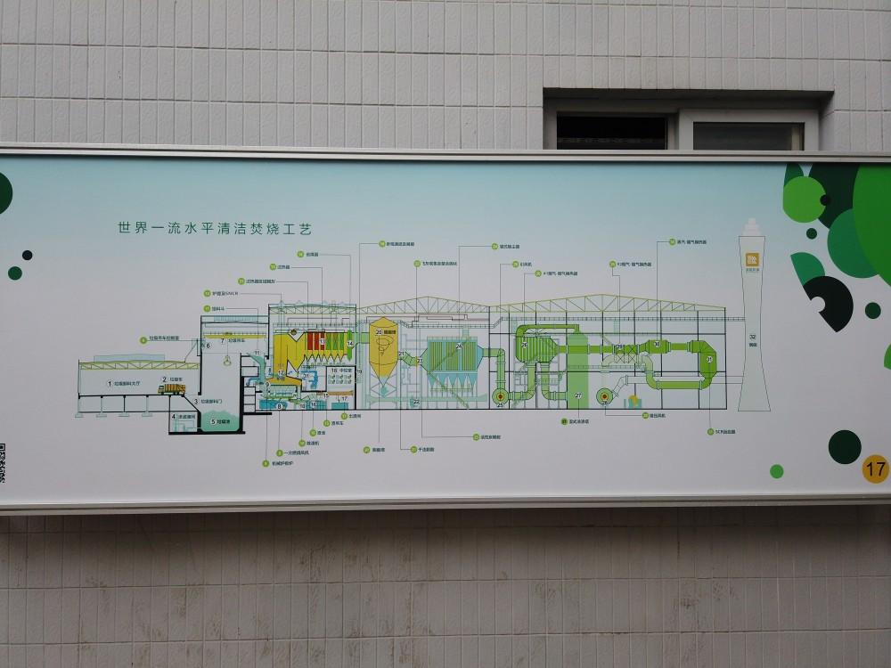{kind=link}
{kind=link}
{kind=link}
虽然有 “九大分流体系” 保护我们的城市，但是我们每个人能做的事情还有很多，比如做好垃圾分类、出门自带水杯、对一次性说不、负责任地消费、物尽其用、低碳出行等等。努力减少垃圾，减少资源浪费，这样才能更好地爱护我们的家园。不是吗？
注解
版权声明：本文为 ZeroTogether 原创文章，遵循 CC-BY-SA-4.0 版权协议，转载请附上原文出处链接和本声明。